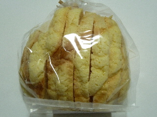
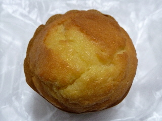
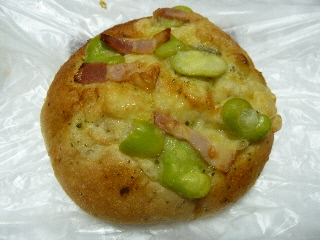
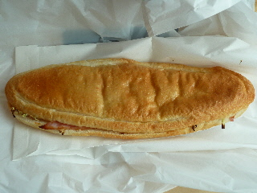
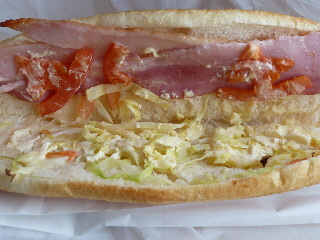
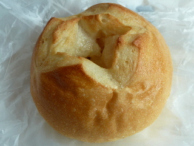
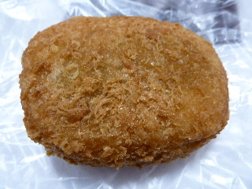
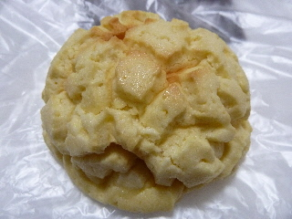

ママ屋のメロンラスクはサクサクでした。
2016/02/11
メロンパン1個分のメロンラスクです。

このラスクは固くなくて、超サクサクでした。
メロンパンの外側はクッキーなので少し歯ごたえがありますが、中はとっても軽いです。
明治のカールみたいにサクサクです。
スナック菓子みたいでした。
島根県出雲市渡橋町1198
定休日：水曜
2016/02/11
メロンパン1個分のメロンラスクです。

このラスクは固くなくて、超サクサクでした。
メロンパンの外側はクッキーなので少し歯ごたえがありますが、中はとっても軽いです。
明治のカールみたいにサクサクです。
スナック菓子みたいでした。
2016/02/06
塩パンは聞くけど、塩バターマフィンなんて商品があるんですね。

どんな味か楽しみです。
食べた感想。
んーこれが塩バター味かー。よくわからない。そんな気もするけど、どうなんだろう？
普通に甘くて美味しいかな？
2014/07/12
ピザパンといえばトマト味のピザソースが掛かっているのが定番な気がします。
でもこれはチーズとバジルのピザパンです。

この写真は暗くていまいちですが、実物は豆の緑色が綺麗で美味しそうでした。
チーズパンにバジルの風味と塩味、それとベーコンとソラマメなので、見た目通りの味でした。
普通に美味しい。
いい組み合わせですね。
夏場はトマトソース系よりもこっちの方が好きかも！って思いました。
三色ピザ 税込150円
2013/02/10
ママ家でパニーニ（ベーコン＆トマト）を買いました。

大きいんですが、180円でした。
なんかお買い得です。

中身の写真です。
トマトは少な目ですが、ベーコンはしっかり入ってました。
ベーコンと香ばしいパンとよく合って美味しかったです。

これはシュクレ・ド・フランス（160円）です。
このパンって、どこで買っても美味しいので好きです。
2012/11/16
出雲市の医大通りの、武田書店があった場所に出来たパン屋さんに行きました。

カレーパンなんですけど、なんだか見た目が大きいコロッケみたいです。
衣がしっかり揚げてあって、サクサクです。
油の美味しさがしっかりあって、ジューシーでした。
中はカレーパンなんですけど、なんとなく味もコロッケっぽいって思いました。

これは、メロンパン（ミルク風味）です。形がゴツゴツっとしていますね。
ミルク味なので、マイルドな感じでした。